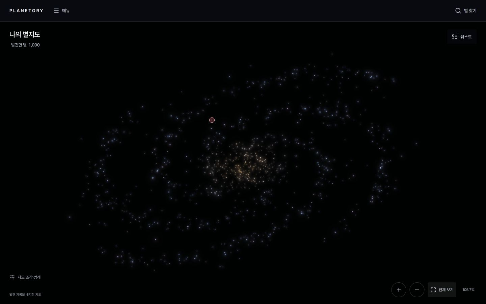

요구사항 명세서 v1.3.1 변경안과 상태표 v1.3.1 변경안의 필수 화면 요소·행동을 확인하는 참고 배치입니다. 신호 매칭, 내 판단, 성과 인정, 별 탐색 완료, 분석 공개를 각각 표시합니다. 미확정 신호는 첫 공개 분석 때 시스템이 공식 스레드를 만들고 공개 분석과 토론을 따로 모읍니다. 위치·크기·카드 배치는 구현 디자인에서 조정할 수 있으며 명세가 정본입니다. 화면 문구는 용어 사전 v1.0.1, 콜아웃은 SRS ID를 따릅니다.
기준 문서
요구사항 명세서 v1.3.1 · 상태표 v1.3.1 변경안
개정일
2026-09-16: 미세 조정 위치 유지·최대 32배 확대 변경안. 2026-09-15: 개인 시제품 시각 기준·연출 색/크기·선택 시에만 행성 표시. 2026-09-14: 은하 배치·GIF 안내·내 행성 근접 뷰. 2026-09-09 (v1.1 2026-09-11: 별 지도 회전·기울기, 챌린지 참여 수 정의, 검색·핫 토픽 P0)
지원 기기
데스크톱 1024px 이상만 P0 (NFR-17)
화면 수
11 프레임 · P0/P1과 대표 상태 구분
P0 핵심 흐름P1 이후 구현v0.13 해당 화면의 최근 반영 버전DEC 미결 항목1 콜아웃 ↔ SRS ID플레이스홀더 데이터·그래픽 자리
화면 흐름
SRS 3.2. 기본 반복: 봉우리 선택·주기 미세 조정 → 접힌 곡선의 구간 → 판단 → 제출 → 온라인 잔차 계산 → 다음 곡선 단계. 탐색 가능한 모든 신호의 매칭으로 완료를 판정하며 판단·성과·게시와 독립이다(SUB-11).
로그인SC-01 · ACC-01~03
→
첫 방문 안내SC-01 · HOME-09 · 1회
→
홈 별 지도SC-02 · HOME-01~08 · 발견한 별만
→
분석SC-03 · EXP-12 단계형
→
신호 일치 → 판단 · 성과 별도 표시SC-04 · RES-01·02·11
신호 미일치 → 상세 / 다시 / 토론SC-04 · RES-07·09 · COM-10
판단 불일치 → 당시 분석으로 재도전SC-04 · SUB-10 · RES-09
마지막 신호 매칭 → 탐색 완료SC-04 · SUB-11 · 완료 보상 없음
→
다음 곡선 단계로EXP-09 · 같은 화면
별 결과 페이지SC-05 · RES-10
공개 검토는 선택SC-11 · 개별 / 모두 게시 / 나중에
성과 1건 인정 → 새 별 1개 발견POL-27 · GRD-08 · DEC-23 · 홈
완료된 별에 새 회차로 찾을 수 있는 신호가 생기면 완료 표시를 거두고 진행 중으로 되돌린다(DEC-27).
GNB 상시
별 피드 → 공식 신호 / 일반 토론SC-06 · COM-01·15·17~20
통계SC-07 · STA-01~04
마이페이지SC-08 · MY-01~04 · 옛 내 진행 흡수
퀘스트 패널 (홈 안)SC-09 · HOME-07 · 챌린지·튜토리얼
알림SC-09 · NTF-01
운영 설정SC-10 · OPS-07·08
별 표식 규칙 (DEC-07 · HOME-05 v1.3)
별 색·크기는 은하 연출이다. 행성 수·탐색 상태·인정된 성과 수·등급은 호버/포커스·상세·목록의 문자로 전달한다. 아직 못 찾은 별은 화면에 없다.
별 색·크기 = 은하 연출
금빛 중앙부·푸른/보라 나선 팔. 행성 수·완료·성과·등급으로 색과 크기를 바꾸지 않는다. 수와 상태는 호버/포커스·상세·목록 문자로 확인한다.
궤도 · 퀘스트 마커
행성 궤도 (회색 실선)주간 챌린지 !튜토리얼 번호
전체 지도는 모든 배율에서 궤도 0개. 선택 별 근접 뷰에서만 내 행성 수만큼 회색 궤도. 별의 작은 발광은 연출. 마커는 퀘스트 패널 카드와 같은 색(빨강·파랑)
축소 시 개별 별 유지 (DEC-32 v1.3 변경안)
먼 별도 독립된 작은 점으로 표시. 은하 팔과 별을 성운 덩어리로 합치지 않음.
표현 상세도·가시 타일 페이지·공간 인덱스 유지
SC-01로그인 · 첫 방문 안내ACC-01 · ACC-02 · ACC-03 · HOME-09 · POL-26P0v1.2두 OAuth만. 첫 로그인 뒤 홈에 튜토리얼 1번 별을 여는 동안 말풍선 안내 5단계를 한 번 보여준다(HOME-09, P0). 완료 저장 뒤 자동 재노출하지 않는다. 마이페이지 [사용법 다시 보기]는 GIF+설명을 읽는 별도 5단계 안내이며 완료 상태를 변경하지 않는다.
✶Planetory
TESS 관측 곡선에서 반복 신호를 찾고 행성인지 스스로 판단하는 탐사
1 SSAFY 계정으로 로그인2 Google 계정으로 로그인
3 첫 로그인: 닉네임 설정 → 튜토리얼 1번 별이 열린 홈으로
41 / 5 · 별을 골라요파란 번호가 붙은 별이 튜토리얼입니다. 1번 별을 눌러 시작해 보세요.다음: 봉우리 → 구간 → 판단 → 제출건너뛰기
5튜토리얼 순차 열림 (HOME-06)
처음엔 1번만 보임. 1 뚜렷한 확인된 행성 → 2 얕은 확인된 행성 → 3 행성 아님 → 4 깊은 행성 아님(쌍성) → 5 여러 행성 아님 신호를 뺀 곡선에서 차례로 탐색. 완료할 때마다 다음이 열리고, 5번까지 마치면 챌린지 별이 열림
사용법 다시 보기 · 별도 읽기 화면 HOME-09 · AT-119
2 / 5 · 반복 주기를 골라요닫기
GIF 자리 · 실제 분석 UI의 봉우리 선택과 접힌 곡선 변화 문서용 자리 표시이며 GIF는 후속 제작
주기도에서 봉우리를 고르면 해당 주기로 접힌 곡선을 확인할 수 있어요. 밝기가 반복해서 줄어드는지 살펴보세요.
이전별 선택 → 봉우리 → 구간 → 판단 → 제출다음
마이페이지에서 열기 · 실제 분석/제출 없음 · onboardingDone 변경 없음 · GIF 실패/모션 줄이기 시 텍스트 유지
1ACC-01SSAFY OAuth. 같은 고유 ID 재로그인은 동일 회원P0
2ACC-02Google OAuth. 다른 제공자의 같은 이메일은 병합하지 않음P0
3POL-26 · HOME-02 · AT-57신규 회원 홈에는 튜토리얼 1번 별만 보임. 완료할 때마다 다음 순번이 은하 배치로 나타나고, 5번 완료 후 챌린지 별이 나타남P0
4HOME-09 · AT-86첫 방문 말풍선 5단계(별 선택 → 봉우리 → 구간 → 판단 → 제출). 1번 첫 제출 또는 안내 닫기 성공 시 완료. 마이페이지에서는 GIF+설명 5단계를 읽기만 하며 상태 변경 없음P0
5HOME-06 · SUB-12튜토리얼 5번은 복수 FP 신호의 잔차 탐색·판단 연습. 불일치가 쌓이면 상세 보기를 거쳐 다음 순번으로 넘어갈 수 있음(SUB-12)(실제 TIC 미선정, TBD). 같은 튜토리얼에서 불일치 제출 3회면 [건너뛰기] 제공(서버 설정, 성과 없음)P0
SC-02홈 별 지도HOME-01 · HOME-02 · HOME-05 · HOME-07 · HOME-08 · GRD-08 · NFR-20P0v1.2검은 연속 캔버스. 중앙부·나선 팔·제한된 분산으로 은하 형태를 유지한다. 새 별의 자리는 서버가 계산·저장하며 기존 별은 움직이지 않는다. 별 색과 크기는 연출이며 상태는 문자로 전달한다. 전체 지도는 모든 배율에서 궤도 0개. 별을 누르면 같은 캔버스에서 그 별과 내 발견 행성으로 접근하고 상세 패널이 뜬다. 행성을 누르면 확대·개별 정보를 표시하고 은하 복귀 시 이전 카메라를 복원한다. 퀘스트 패널은 기본 접힘.

7개별 별 유지축소해도 별을 합치지 않습니다
드래그 회전 예시· 각 별의 위치를 작은 점으로
별 지도 · 목록 뷰WebGL 미지원
8발견한 별 12진행 중 3완료 4미탐사 5
TIC 231663901행성 2 · 진행 중1
튜토리얼 1 · 곡선 단계 2
분석
TIC 149603524행성 0 · 미탐사!
주간 챌린지 36주차
분석
튜토리얼 5 · TIC 미정행성 없이 완료
복수 행성 아님 신호 · 직접 탐색·판단한 예시
결과
폭 1024px 미만은 "데스크톱에서 이용해 주세요" 안내만 (NFR-17)
SC-02 · 선택한 별의 근접 뷰별 전체 보기은하로 돌아가기
내가 찾은 행성 2개
목록 또는 행성 선택 → 해당 행성 확대
c-401c-402
선택한 신호
c-401
종류
확인된 행성
반복 주기
3.0021일
어두워진 정도
1450ppm (0.145%)
내 발견 신호만 · 성과 인정 수와 별도 0개: 아직 표시할 내 행성이 없어요 불러오기 실패: 다시 시도 / 은하로 돌아가기
1HOME-01 · HOME-02 · DEC-30발견한 별만 그림. 자리는 서버가 발견 시 계산해 StarUnlock에 저장(world_x·world_y·depth_z·layout_ordinal·layout_version), 클라이언트는 읽기만 (NFR-20c)P0
2HOME-08같은 캔버스에서 선택 별 근접 뷰·내 행성 공전·행성 선택 확대. 상세 패널은 가장자리에 도킹. 빈 하늘 클릭 또는 [은하로 돌아가기]는 이전 지도 카메라 복원. [분석 계속]·[결과]·[스레드]P0
3HOME-05 · GRD-07행성 수는 문자로, 등급(= 인정된 성과 수)·곡선 단계는 문자로만. 유형별 등급은 없음. 확인된 행성 보유 여부는 홈에서 숨김(HOME-02)P0
4HOME-05 · 결정 22행성에 마우스를 올리면 종류·주기·감광 깊이. 클릭/목록 선택으로 확대와 개별 정보를 표시. 궤도는 매칭한 확인된 행성 + "행성 같음" 판단 미확정 신호만. 성과 인정과 별도P0
5HOME-07퀘스트 패널 기본 접힘. 펼친 상태는 SC-09P0
6HOME-05 · NFR-08범례. 색만으로 전달하지 않음P0
7DEC-32 · NFR-20a축소 시 개별 별 유지. 군집 호버/확대 제거, 개별 별 선택과 휠 확대 유지P0
8NFR-18 · NFR-17WebGL 미지원 환경은 목록 뷰로 대체. 폭 1024px 미만은 안내만(모바일 P2)P0
·GRD-08 · DEC-23고유 신호 성과가 인정될 때마다 못 찾은 별 1개(운영 설정 stars_per_achievement)를 무작위로 발견, 서버가 계산한 은하 위치에 나타남. 등급 상승·탐색 완료는 발견 조건이 아님 (AT-58)P0
·NFR-20 · DEC-16별 개수 잘라내기 없이 가시 타일·인스턴싱으로 최적화. 100,000개 p95 16.7ms 목표와 시각 인수를 별도 검증(AT-71·123·124)P0
SC-03분석 (단계형)EXP-01 ~ EXP-13 · SUB-01 · SUB-02 · SUB-11P0v0.12참고 배치. 필수 요소는 단계 안내, 시간 영역 곡선, 반복 주기 그래프, 접힌 곡선, 별 정보, 확인 도구, 판단 입력과 제출값 요약이다. 브라우저가 현재 곡선의 전 점을 선택 주기로 접어 즉시 표시한다. 새 봉우리를 고르면 이후 단계와 가로 확대가 초기화되고, 주기 미세 조정은 이후 단계만 초기화하며 접힌 곡선의 가로 확대 배율과 화면 중심 위상을 유지한다(EXP-12·13). 하단 액션 바에 [이전]·[더 없음 의견]·[제출]. 곡선 단계가 바뀌어도 같은 화면.
11봉우리 선택 3.21일›2주기 맞추기 3.2098일›3구간 고르기›4판단›5제출새 봉우리: 이후+가로 확대 초기화 · 미세 조정: 이후만 초기화
2밝기 변화 곡선 회차 1 · 4 · 5, 공백 접음 · 예상 구간 미리보기(읽기 전용)전체확대
회차 1 · 1325–1352접힌 곡선 선택 → 브라우저가 예상 transit 띠 즉시 동기화(수정 불가)회차 4 · 5
3반복 주기 그래프 곡선 단계 2 · 서버 계산 완료 (캐시)전체확대계산 중이면 진행 표시
0.5일413.5일부터 음영 = 관측 기간의 절반 넘음 (이번 회차로는 찾기 어려움)40일
5주기로 겹친 곡선 전 점 브라우저 접기 · 2주기 · 휠 x축 ×1~32 · 더블클릭/0 초기화 · +/- 중앙 확대주기 3.2098일 · 가로 ×4
3.19주기 미세 조정 · 브라우저에서 즉시 다시 접기(BLS 재요청 없음) · 가로 ×4·화면 위치 유지3.23
−P접힌 곡선에서 위상 시작·끝 선택 → 핸들 수정. 브라우저가 기준 시각·가려진 시간 즉시 미리보기+P
선택 · 반복 주기 3.2098일 · 기준 시각 1326.842(미리보기) · 가려진 시간 2.6시간(미리보기)
확인 도구 · 판단 단계에서 사용
홀수·짝수 비교주기 절반 지점 확대가려짐 모양 확인
선택한 도구의 비교 곡선·확대 구간을 표시
근거 체크와 별도로 실제 곡선을 확인하는 도구를 제공합니다. 중심 위치는 데이터 없음입니다.
6별 정보
온도
5,420 K
반지름
0.91 R☉
데이터 판
bundle_v3
확인된 행성이 있는 별
상세는 해당 신호 일치 또는 상세 열람 뒤 공개 · 전체 확정 개수는 비공개
7④ 판단 단계 3 뒤 열림
행성 같음아닌 것 같음모르겠음
근거 (선택)
홀수·짝수 밝기 같음
반대편 가려짐 없음
바닥 평평한 모양
중심 위치: 데이터 없음 읽기 전용
메모 (선택)
← 이전 단계이 별에서 찾은 신호 1 · 곡선 단계 29더 없음 의견제출 (판단 뒤 활성)
1EXP-05·08·12·13 · AT-72·90·915단계 표시줄. 브라우저가 전 점을 선택 주기로 접으며 주기 변경만으로 BLS·잔차 API를 호출하지 않음. 새 봉우리는 이후 값과 가로 확대를 초기화. 미세 조정은 이후 값만 초기화하고 접힌 곡선 x축 확대 배율·화면 중심 위상 유지P0
2EXP-03·06·07 · AT-06·95 · NFR-10회차 경계·다년 공백 접어 표시. 예상 transit 띠와 epoch·지속시간은 브라우저가 선택 중 즉시 미리보기하고, 제출 시 서버가 위상 원본값으로 최종 계산·검증P0
3EXP-04 · AT-73범위 = 그 별 후보 최대 주기 × 1.15 (최소 40일). 봉우리는 찾을 수 있는(discoverable) 후보만P0
·EXP-01 · DAT-11 · AT-117분석 도중 그 별의 새 데이터 판이 공개되면 상단에 "새 데이터 판이 공개되었습니다 · [다시 불러오기]" 안내. 곡선 단계·제거 조합은 유지하고 주기·위상 선택만 초기화. 세션을 옛 판에 고정하지 않음P0
·POL-03 · DAT-14 · AT-80EC2 온라인 계산(결과는 Redis 캐시): 대기 → 잔차 계산 → 잔차 준비 → 주기도 계산 → 완료/실패. 같은 Bundle·제거 조합·버전은 캐시, 새 판이 공개되면 재로드하고 옛 판 캐시는 정리P0
4EXP-04 · 결정 23관측기간/2 넘는 구간 음영. 그 구간의 후보는 이번 회차에 찾을 수 없음 → 재개 대기 사유P0
5EXP-06·07·08·13 · DEC-16·19 · AT-95·96접힌 곡선에서 위상 시작·끝 선택. 브라우저와 서버는 Bundle의 같은 접기 기준 시각을 사용. 브라우저가 epoch·지속시간을 즉시 미리보기하고 서버가 제출 시 최종 계산. 포인터 기준 x축 확대·더블클릭 ×1, 키보드 +/-/0 지원, 기준 시각·가려진 시간 숫자 직접 입력 없음. 선택 폭 자체가 가려진 시간P0
6EXP-02 · POL-04·05사전 공개는 확인된 행성 보유 여부만. 상세는 해당 신호 매칭 또는 상세 열람 뒤, 전체 확정 개수는 비공개P0
7EXP-11 · POL-13 · AT-93판단 3값 + 선택 가능한 근거 4종 + 중심 위치 데이터 없음(비활성) + 메모. 구간 단계 뒤에 활성P0
8EXP-09 · POL-07신호 매칭 뒤 사용자가 다음 곡선을 요청하면 잔차를 계산. 판단·게시와 독립이며 이전 단계 복귀 가능P0
9SUB-11 · POL-29더 없음 의견은 찾을 수 있는 신호가 남은 별에서만 의미. 신호가 남았다는 안내와 재도전을 제공. 완료는 탐색 가능한 신호의 매칭 기준이며 이 의견은 완료·성과를 만들지 않음P0
·SUB-01 · SUB-02클라이언트 제출 원본값: Bundle·곡선 단계·주기·위상 구간·판단·유효 근거·메모. 미리보기 epoch·duration은 신뢰 입력이 아니며 서버가 위상 원본값으로 최종 계산·저장P0
SC-04결과 · 판단 · 성과 · 탐색 완료RES-01~03 · RES-07~11 · SUB-06·10·11 · GRD-02~04P0v0.13독립적으로 표시할 결과 조합의 예시다. 신호 매칭은 탐색 진행을, 확정 행성·행성 아님 신호에 대한 올바른 판단은 성과를 정한다. 미확정 신호는 분석 공개가 성과 조건이다. 완료 자체의 보상이나 진입만으로 받는 보상은 없다. 카드 배치는 참고안이다.
1확인된 행성 · 판단 일치
신호를 찾았어요. 내 판단도 기록과 같아요.
신호
3.2101일 · 내 값 3.2098일
기록 / 내 판단
확인된 행성 / 행성 같음
성과
올바른 판단으로 인정됨 · 이 별 성과 2건(등급 S) · 새 별 1개 발견
별 탐색
진행 중 · 다음 신호 탐색 가능
AI
승인 구간 78점 · v1.2 · 인정에는 쓰이지 않음
다음 곡선 단계로결과 보기일반 토론 쓰기
이 신호를 찾은 사람 중 기록과 일치 70% · 10명
확인된 행성·행성 아님 신호에는 세 판단 막대 대신 이 한 줄만 둡니다. 모수는 이 신호를 찾은 회원, 회원당 첫 매칭 제출 기준입니다(COM-14 (2)).
확인된 행성도 주기만 찾고 판단이 다르면 성과를 인정하지 않습니다. 상세에는 외부 출처·조회일·내 원본값과 정정값을 구분합니다.
2마지막 신호 · 확인된 행성 판단 불일치
탐색은 완료했지만 내 판단은 기록과 달라요.
탐색 완료판단 불일치성과 미인정
신호
마지막 탐색 가능 신호와 일치
기록 / 내 판단
확인된 행성 / 아닌 것 같음
AI
승인 구간 78점 · 인정에는 쓰이지 않음
다시 풀기이 신호 상세 보기결과 보기
다시 풀기는 방금 제출 당시의 곡선과 입력을 복원합니다. 판단을 바꾸어 새로 제출해도 탐색 완료는 유지됩니다.
3마지막 신호 · 행성 아님 판단 불일치
탐색은 완료했지만 내 판단은 기록과 달라요.
탐색 완료판단 불일치성과 미인정
신호
마지막 탐색 가능 신호와 일치
기록 / 내 판단
행성 아님 / 행성 같음
AI
기각 구간 12점 · 인정에는 쓰이지 않음
다시 풀기이 신호 상세 보기결과 보기
행성 아님 신호를 직접 매칭하고 아닌 것 같음으로 판단하면 성과 1건을 인정하고 새 별 1개를 엽니다. 여러 FP 신호가 있어도 탐색 완료 조건은 모두 매칭하는 것입니다.
4미확정 신호 · 분석 공개는 선택
신호를 찾았어요. 분석을 공개할 수 있어요.
신호 일치내 판단 · 모르겠음미게시 · 성과 미인정
공개 분석의 판단 · 참여자 13명
행성 같음 8명 · 아닌 것 같음 3명 · 모르겠음 2명
61.5% / 23.1% / 15.4% · AI 승인 구간 78점
집계 시각 2026-09-08 14:00 KST
공개 내용 검토공개하지 않고 다음 곡선으로결과 보기
마지막 신호라면 탐색 완료를 함께 표시하고 다음 곡선 대신 결과 보기로 이동합니다. 모르겠음도 공개할 수 있으며, 매칭한 분석을 공개해야 미확정 성과가 인정됩니다.
5일치하는 신호 없음
기록된 신호 중 일치하는 것이 없습니다.
분석은 개인 히스토리에 남았습니다. 행성이 없다거나 새로운 후보라고 단정하지 않습니다.
상세 보기다시 풀기토론하기
상세 보기: 제출 곡선 단계에서 아직 제거되지 않은 탐색 가능한 후보 중 가장 뚜렷한 하나의 힌트. 누적 매칭 여부와 별개로 당시 곡선을 기준으로 합니다. 판단 불일치의 상세 보기는 방금 매칭한 신호를 보여주므로 대상이 다릅니다.
상세 보기 대상 후보가 0개이면 비활성 · 제공할 해설이 없습니다.
토론하기: 같은 별을 선택한 일반 토론에 본인 기록 첨부. 공식 신호 스레드·공개 분석·후보·성과는 자동 생성되지 않습니다.
6추가 결과와 재도전 상태
같은 신호의 다른 주기
내 주기 6.42일 → 대표 주기 3.21일 · 2배 관계. 원본·정정값·사유를 함께 표시.
이미 인정된 신호 / 구분하기 어려움
중복 성과 없음 / 성과 없음. 각각 기존 결과 또는 재도전으로 이동.
AI 평가 정보 없음
입력 부족·평가 오류·미평가를 구분. 0점이나 기각으로 표시하지 않음.
확인된 행성·행성 아님 신호에서 모르겠음
마지막 신호면 탐색 완료판단 보류성과 미인정
판단 불일치와 구분하며 당시 분석으로 돌아가 다시 판단할 수 있습니다.
분석 복원 중 → 복원됨 / 실패·재시도
기존 제출은 바꾸지 않으며 복원 후 재제출은 새 히스토리로 남음.
더 없음 의견은 남은 신호 안내만 제공하고 완료·성과를 만들지 않습니다. 찾을 수 없는 신호만 남았다는 사유와 새 관측 뒤 재개 여부는 탐색 상태에 따로 표시합니다.
1RES-01·02·11 · GRD-02·03확정 행성·FP 모두 신호 매칭과 올바른 판단이 성과 조건이고 인정 즉시 별 1개가 열림. 매칭·판단·성과·완료는 서로 다른 표시값. 채점형은 "기록과 일치 N% · M명" 한 줄, 미확정은 세 판단 막대로 구분(COM-14)P0
2SUB-10·11 · RES-09마지막 확정 행성 판단 불일치도 완료·불일치·미인정. 다시 풀기는 당시 곡선·입력 복원 후 새 제출P0
3GRD-03 · SUB-11마지막 FP 판단 불일치도 같은 세 상태. 진입만으로 완료·보상하는 예외 없음P0
4RES-08 · GRD-04 · COM-14·17~19미확정은 공개 검토가 선택이며 미게시 다음 곡선 탐색·완료 가능. 첫 공개 때 공식 스레드 생성, 공개 성공 시 성과P0
5RES-07·09 · COM-07·10·20미매칭 힌트와 매칭 후 판단 오류 상세를 구분. 일반 토론 첨부 자체는 성과가 아님P0
6EXP-10 · SUB-04~06·10 · RES-04·06복원 대상: 현재 데이터 판·곡선 단계·제거 조합·주기·위상 구간·판단·근거·메모·확대 상태. 기존 기록 불변, 새 요청으로 재제출P0
SC-05별 결과 · 히스토리 · 공개 분석RES-06·10·11 · HIS-04·06 · COM-14·17~19 · GRD-04P0v0.13결과 카드·별 상세·마이페이지에서 같은 결과로 진입한다. 별 완료, 개별 판단·성과, 분석 공개 상태를 따로 보여주며 완료 후에도 재도전·나중 게시가 가능하다.
PlanetoryTIC 149603524 › 결과별 지도별 피드
1TIC 149603524탐색 완료찾은 신호 2미게시 분석 1건
탐색 가능한 신호를 모두 찾았습니다. 공개 여부와 성과 인정은 별개입니다.
미게시 분석 검토분석 다시 보기
2찾은 신호 내가 매칭한 신호 · 판단의 일치 여부와 구분
신호
내 판단
기록 / AI
성과
공개
행동
3.9일
행성 같음
미확정 / 승인 78
인정 · 성과 1건
공개됨
공식 스레드내 공개 분석
1.8일
모르겠음
미확정 / 보류 52
미인정
미게시
공개 검토다시 풀기
신호 상세: 제출 수치·정정값·곡선·근거·메모·버전, 공개 분석의 판단 분포. 공개되지 않은 다른 회원의 개인 히스토리는 노출하지 않습니다.
3제출 기록 최신순 · 기존 기록 수정·삭제 없음
시각 · 곡선
제출
신호 결과
판단 / 성과
별 상태 · 행동
09-08 14:02 · 뺀 곡선 1
1.8일 · 모르겠음
일치
미확정 / 미게시·미인정
이 제출로 탐색 완료 · 다시 풀기
09-08 13:58 · 뺀 곡선 1
1.1일 · 모르겠음
일치하는 신호 없음
성과 없음
기록 보기일반 토론
09-08 13:31 · 원본
3.9일 · 행성 같음
일치
공개 후 인정 · 성과 1건
내 공개 분석
09-02 10:14 · 원본 이전 데이터 판
6.4일 · 행성 같음
일치
인정 · 성과 1건
제출 당시최신 데이터
다시 풀기는 현재 데이터 판에서 제출 당시 곡선 단계·제거 조합·주기·구간·확대 상태를 복원하고 판단·근거·메모는 비웁니다. 제거 조합에 은퇴한 신호가 있으면 현재 진행 단계에서 시작하며 안내합니다. 새 제출·새 히스토리를 만들고 현재 별 완료를 되돌리지 않습니다.
4공식 신호 스레드 · 일반 토론
3.9일 공식 스레드1.8일: 아직 공개된 분석 없음 · 첫 공개 때 스레드 생성별 일반 토론 보기
다음 할 일
미게시 분석은 나중에 공개할 수 있습니다. 공개하지 않아도 이 별의 탐색 완료는 유지됩니다.
공개 내용 검토홈으로
1RES-10 · SUB-11 · GRD-04별 요약의 완료·성과·공개 상태 독립. 완료 후 미게시 분석 검토와 오판 재도전 가능P0
2RES-06·11 · COM-14·18공개된 회원×신호별 최신 제출 1건의 세 판단 통계. 공개 순서가 아닌 제출 시각을 사용P0
3HIS-04·06 · EXP-10 · SUB-10제출과 공개 분석·일반 토론은 다른 기록. 공개 취소·숨김이 개인 히스토리를 바꾸지 않음. 옛 판 기록은 저장된 절대값을 현재 판에 재환산해 그리고 "이전 데이터 판에서 제출됨"을 표시하며, 매칭 성공 기록에는 "제출 당시 / 최신 데이터" 토글을 둠(HIS-03)P0
SC-06공식 신호 스레드 · 공개 분석 · 일반 토론COM-01·04~08·14~20P0v0.13전체 피드와 별 피드에서 일반 토론 및 미확정 신호의 공식 스레드를 찾는다. 공식 스레드는 신호당 하나이며 첫 공개 분석 때 SYSTEM이 자동 생성한다. 공개 분석은 토론 댓글과 독립된 목록이다. 아래 배치는 참고이며 세 영역과 연결 행동을 제공해야 한다.
Planetory커뮤니티 › TIC 149603524 › 3.9일 신호전체 피드이 별 분석하기
13.9일 신호 · 아직 확인 안 된 신호시스템 공식 스레드
분석과 의견을 모으는 공간입니다. 공식 스레드라는 표시는 행성으로 검증됐다는 뜻이 아닙니다.
2공개 분석의 판단 참여자 13명
행성 같음 8명 · 61.5%아닌 것 같음 3명 · 23.1%모르겠음 2명 · 15.4%
집계 시각 2026-09-08 14:00 KST · 공개된 분석 중 회원별 제출 시각이 가장 최근인 1건을 집계합니다. 세 판단 모두 분모에 포함하며 합계는 100%입니다. 토론의 동의·비동의는 포함하지 않습니다. 예시는 반올림한 표시값입니다.
전체 분석행성 같음아닌 것 같음모르겠음
필터는 목록만 좁힙니다. 위 비율의 분모는 그대로이며 판단별 링크로 바로 진입할 수 있습니다.
3공개 분석 토론 댓글과 별도 · 제출 시각 표시
별빛사냥꾼제출 2026-09-08 13:31 · 공개 14:10행성 같음공개 취소
내 반복 주기 3.8998일 · 기준 시각 1327.10 · 가려진 시간 4.1시간 · 어두워진 정도 0.12%
근거: 홀수·짝수 밝기 같음, 반대편 가려짐 없음 · 뺀 곡선 1 · 데이터 묶음 v3
개인 히스토리의 해당 곡선·선택 구간을 재현한 공개 분석
메모: 홀수·짝수를 비교한 뒤 행성 같음으로 판단했습니다.
분석 출처 링크 복사신고 (v1 제외)
게시로 동의나 댓글을 자동 생성하지 않습니다. 본인 공개 취소·운영 숨김은 공개 목록과 판단 통계에서 제외하며 개인 히스토리는 남습니다.
4이 신호 토론 공개 분석과 독립된 댓글
seojin · 반대편 가려짐을 어느 범위까지 확인했나요?
토론 댓글
출처 링크 추가등록
공개 분석이 없을 때
아직 공개된 분석이 없습니다. 비율은 표시하지 않습니다. 최초 공개 전에는 공식 스레드를 미리 만들지 않습니다. 공개 취소로 참여자가 0명이 된 기존 스레드는 유지합니다.
5일반 토론글 · 출처 카드
3.9일 신호의 모양을 함께 비교해 주세요
별빛사냥꾼 · 일반 토론 · TIC 149603524
연결된 신호: 3.9일
공개 분석 참여자 13명 · 61.5% / 23.1% / 15.4%
집계 시각 2026-09-08 14:00 KST
공식 스레드행성 같음아닌 것 같음모르겠음
분석 출처 · seojin타인의 공개 분석은 복제 첨부하지 않고 출처 링크로 연결
동의 5비동의 1
이 글의 주장에 대한 반응입니다. 공개 분석의 판단·통계·성과를 변경하지 않습니다. 반응자 닉네임을 공개합니다.
6일반 글 작성 · 자료 연결
대상 별: TIC 149603524 ▾ 선택 사항
제목 · 본문 · 목적 태그
같은 별의 내 히스토리 첨부공식 신호 출처 링크공개 분석 출처 링크
별을 선택하면 같은 별의 본인 히스토리만 자료로 첨부할 수 있습니다. 같은 별의 공식 신호와 타인의 공개 분석은 출처 카드로 연결합니다. 어느 첨부·링크도 분석 공개나 성과 인정으로 취급하지 않습니다.
별을 선택하지 않은 상태
별에 연결된 자료 첨부·출처 카드 선택은 비활성입니다. 본문에 일반 URL을 작성하는 것은 가능합니다.
공개되지 않거나 운영자가 숨긴 자료
이 자료를 볼 수 없습니다. 내용·제목 미리보기·직접 링크를 숨깁니다. 숨긴 공식 스레드는 새 분석 공개로 다시 생성하지 않습니다.
게시나중에
1COM-17 · COM-01미확정 고유 신호당 SYSTEM 공식 스레드 하나. 최초 공개 성공 때 생성하며 관리자는 숨김·복원, 숨긴 스레드 재자동생성 금지P0
2COM-14 · COM-18공개된 회원×신호별 최신 제출 한 건. 세 판단 합 100%, 필터 분모 불변, 참여자 0명이면 미공개 상태 문구P0
3COM-18 · HIS-04수치·곡선·판단·근거·메모를 가진 공개 분석 독립 목록. 본인 공개 취소·운영 숨김, 자동 반응·자동 댓글 없음P0
4COM-06 · COM-17·18토론 댓글은 공개 분석과 다른 기록. 분석 수와 댓글 수를 따로 표시P0
5COM-08·14·20일반 글의 동의·비동의와 분석 통계 분리. 결과·공식 스레드·참조 카드는 같은 집계값과 집계 시각을 표시하며 신호 링크·판단 필터를 제공P0
6COM-04·07·13·20 · NFR-13·14별 선택·본인 소유·공개 상태에 따른 자료 연결. 비공개·숨김 자료의 내용과 직접 링크를 모든 진입점에서 숨김P0
SC-07통계STA-01 ~ STA-04 · DAT-13 · DEC-31 · POL-13P1v0.12내 통계 / 전체 / 비교 3탭. 순위·백분위는 두지 않는다. 전체와 비교 기준은 어제자 StatsSnapshot(일 1회 집계).
4STA-01 · POL-13제출 가능한 유효 근거의 사용 횟수와 일치 수. 중심 위치 데이터 없음은 집계 제외P1
5STA-02 · STA-03 · DAT-13 · DEC-31 · AT-77전체·비교는 일 1회 StatsSnapshot. 중앙값은 90일 내 제출 1건 이상 회원P1
SC-08마이페이지MY-01 ~ MY-04 · ACC-05 · HIS-04 · HOME-09 · DEC-34P0v1.2옛 "내 진행" 화면을 흡수. 프로필 요약(닉네임 인라인 변경, 팔로잉·팔로워), 내 별 목록(최근 활동순), 분석 히스토리, 설정(알림·사용법 다시 보기·내 별 목록 공개·계정).
Planetory마이페이지별 지도커뮤니티통계마이페이지🔔
1jm.kang✎ 닉네임 변경가입 2026-08-20 · 팔로잉 4 · 팔로워 9 P1
발견한 별 12완료 4찾은 신호 7등급 A 2 · S 1 · SS 0 · SSS 0
통계설정
2내 별 제출 이력이 있는 별 · 최근 활동순전체진행 중완료미게시 있음
TIC 149603524다시 열림행성 1 · 진행 중
3 새 회차 반영으로 찾을 수 있는 신호가 생겼습니다 · 1시간 전
다시 분석결과
TIC 231663901행성 2 · 완료성과 2건 · 등급 S
곡선 단계 3 · 미게시 신호 1건 · 09-04
결과스레드
튜토리얼 5 · TIC 미정행성 없이 완료행성 아님 A
복수 행성 아님 신호 · 탐색 완료, 올바른 판단으로 인정
결과
TIC 52368076행성 0 · 진행 중
튜토리얼 2 · 곡선 단계 1 · 일치하는 신호 없음 2회
분석 계속
4분석 히스토리 본인만 · 변경 없음TIC ▾기간 ▾
별 · 단계
제출
결과
149603524 · 2
1.8 · 모르겠음
미확정 신호 일치
공개 분석 검토
231663901 · 1
6.4201 · 행성 같음
확인된 행성 · 판단 일치
일반 토론 첨부
52368076 · 1
1.10 · 모르겠음
신호 일치 없음
열람
5설정
내 별 목록 공개비공개면 다른 회원에게 목록 숨김. 현재 공개 중인 글·분석 판단 분포는 그대로
알림 · 등급
알림 · 다시 열린 별
알림 · 새 챌린지
알림 · 팔로우한 별 새 글 P1
사용법 다시 보기 P0안내 열기
로그아웃회원 탈퇴 DEC-11
1MY-01 · ACC-05 · AT-85닉네임 상시 변경(중복·금칙어 검사만), 기존 글·반응에 즉시 반영. 팔로잉·팔로워 수는 P1P0
2MY-02 · HOME-03내 별 목록. 진행 단계·행성 수·등급·곡선 단계·미게시 수. [결과]·[분석 계속]·[스레드]P0
3DEC-27 · AT-83다시 열린 별은 목록 상단, "다시 열림" 표시와 [다시 분석]. 완료 표시는 거두고 기존 인정은 유지P0
4MY-03 · HIS-04히스토리 조회·필터. 미확정 미게시 신호에 [공개 분석 검토], 같은 별 자료의 일반 토론 첨부와 별개P0
5MY-04 · DEC-34 · HOME-09 · AT-84내 별 목록 공개(기본 공개), 알림 종류, 계정·탈퇴. [사용법 다시 보기]만 HOME-09의 P0: GIF 5단계 읽기, 상태 변경·실제 제출 없음P1
SC-09퀘스트 패널 · 알림HOME-07 · CHL-01 ~ 03 · POL-24 · NTF-01 · DEC-27P0P1v0.13챌린지 페이지는 따로 두지 않는다. 홈의 퀘스트 패널을 펼치면 챌린지 카드(빨간 !)와 튜토리얼 카드(파란 번호), 다시 열린 별 카드가 보인다. 알림은 P1.
1퀘스트 36주차접기 ▴
!
주간 챌린지 · TIC 149603524
아직 확인 안 된 신호 · AI 승인 구간 · 09-06까지 · 스레드 참여 27명
🔒 튜토리얼 5개를 마치면 열립니다
↺
다시 열린 별 · TIC 149603524
2 새 회차로 찾을 수 있는 신호가 생겼습니다
다시 분석
1
튜토리얼 1 · 뚜렷한 확인된 행성
완료 · 행성 2
✓
2
튜토리얼 2 · 얕은 확인된 행성
진행 중 · 곡선 단계 1 · 불일치 3회(수치 2 · 판단 1)
계속상세 보기 → 다음 튜토리얼로
3
튜토리얼 3 · 행성 아님
🔒 2번을 마치면 열립니다
4 · 5 🔒 ▾
별 지도커뮤니티통계마이페이지🔔
3알림 읽지 않음 3모두 읽음
↺
다시 열린 별 · TIC 149603524에 새로 찾을 수 있는 신호가 생겼습니다
다시 분석1시간 전
!
새 챌린지 시작 · 36주차 · TIC 149603524
어제
기록이 바뀜 · 내가 찾은 3.21일 신호가 확인된 행성으로 갱신
GRD-06 · 어제
💬
내 글에 답글 · seojin
읽음
★
팔로우한 별 새 글 · TIC 231663901 P1
읽음
1HOME-07 · CHL-01 · POL-24 · SUB-12퀘스트 패널 펼침. 튜토리얼은 순서대로 열리고 잠긴 카드는 조건을 표시. 수치 불일치와 판단 불일치를 합해 tutorial_skip_after(기본 3, 운영 0=끔)에 도달하면 [상세 보기] 화면 끝에서 [다음 튜토리얼로] 제공(SUB-12). 챌린지 카드는 튜토리얼 5개 완료 후 활성(달성 조건 없음, 스레드 참여 수만)P0
2DEC-27 · AT-83다시 열린 별 카드. 새로 찾을 수 있는 신호를 찾도록 장려P0
3NTF-01 · COM-16알림: 재개 별([다시 분석] 포함), 새 챌린지, 기록 갱신, 답글, 팔로우한 별 새 글. 설정에서 종류별로 끔P1
·CHL-01 · DEC-10챌린지는 달성 조건·보상 없음(DEC-10 종결). 종료 후에도 별은 닫히지 않음P0
SC-10타인 프로필 · 운영 설정DEC-34 · COM-16 · OPS-07 · OPS-08 · HOME-06 · DEC-23P0v0.13다른 회원의 프로필은 공개 중인 글·분석만 보이며 내 별 목록은 회원 설정을 따른다. 운영 설정은 튜토리얼·챌린지·발견 규칙과 공식 스레드·공개 분석 숨김·복원을 제공한다. 무신호 별은 제공 대상에서 제외한다.
커뮤니티 › 별빛사냥꾼
1별빛사냥꾼팔로우 P1신고
가입 2026-08-22 · 팔로잉 3 · 팔로워 21 · 발견한 별 34 · 찾은 신호 19
2별 목록은 비공개입니다
이 회원이 마이페이지에서 별 목록을 비공개로 설정했습니다 (DEC-34)
3게시글 24 현재 공개 중인 글
TIC 2316639016.42일 신호, 홀수·짝수가 같아서…
답글 7 · 동의 5 · 비동의 1
운영 › 대상·발견 설정운영자
4튜토리얼 별 5개 이력 기록 · DEC-01 확정 후 TIC 교체
#
TIC (프로토타입)
의도
기록
1
231663901
뚜렷한 확인된 행성
KP · 깊이 > 8000 ppm
2
52368076
얕은 확인된 행성
CP · 깊이 < 1500
3
219338557
행성 아님
FP
4
300871545
깊은 행성 아님 (서로 가리는 쌍성)
FP · > 20000
5
TBD
복수 행성 아님 신호 · 잔차 탐색
실제 TIC 미선정
5챌린지 대상 · 36주차 아직 확인 안 된 신호 + AI 승인 구간 검증
149603524+ 추가회차 시작 시 알림 발송 (NTF-01)
공식 스레드 · 공개 분석 관리 COM-17·18 · v1 제외
공식 스레드는 SYSTEM이 생성합니다. v1에는 신고·숨김·복원 화면을 두지 않고, 문제 콘텐츠는 운영자가 DB에서 hidden 상태로 바꿉니다(COM-13, OPS-06).
스레드 숨김스레드 복원공개 분석 숨김공개 분석 복원
숨김 상태는 새 게시로 해제되지 않습니다. 사용자 화면·참조 카드에는 숨긴 자료의 내용·직접 링크를 노출하지 않습니다.
3DEC-34현재 공개 중인 글·반응·분석 판단 분포만 노출. 공개 취소·운영 숨김 자료는 제외P0
4HOME-06 · OPS-07 · 결정 12튜토리얼 5개. 5번은 복수 FP 신호의 직접 매칭·판단·잔차 탐색. 실제 TIC은 미선정(TBD), 무신호 별 제외P0
5OPS-07 · CHL-01 · NTF-01회차별 챌린지 대상 등록과 조건 검증. 시작 알림P0
6OPS-08 · GRD-08 · DEC-23 · NFR-20c성과 1건당 발견 수(기본 1)는 운영 설정. 반경·확률 가중은 없음(무작위). 자리는 서버 계산P0
SC-11미확정 분석 공개 검토 · 모두 게시COM-18·19 · GRD-04 · HIS-04 · NFR-01·02P0v0.12분석 중 개별 결과, 별 결과, 개인 히스토리에서 진입한다. 완료 화면에서는 게시 가능한 미확정 분석을 함께 검토한다. 공개는 선택이며 게시 전까지 개인 기록으로 남고, 위치·표 구성은 참고안이다.
PlanetoryTIC 149603524 › 분석 공개 검토탐색 완료
탐색을 완료했습니다. 분석 공개는 선택입니다.
공개하면 다른 회원이 내 수치·곡선·판단·근거·메모를 볼 수 있습니다. 미확정 신호의 성과는 공개 성공 시 인정됩니다. 나중에 게시해도 됩니다.
1공개 내용 미리보기 미확정 매칭 기록 2건 · 개인 히스토리에서 선택
신호 · 제출
내 판단
공개 대상과 내용
상태
개별 행동
3.9일 · 09-08 13:31
행성 같음
해당 신호의 공식 스레드 / 수치·곡선·근거·메모 전체 내용 보기
미게시
이 분석 게시
1.8일 · 09-08 14:02
모르겠음
첫 공개 시 공식 스레드 생성 / 수치·곡선·근거·메모 전체 내용 보기
미게시
이 분석 게시
분석 내용을 바꾸려면 당시 분석으로 돌아가 새로 제출합니다. 기존 개인 히스토리의 값은 덮어쓰지 않습니다. 공식 스레드 공개 분석은 토론 댓글·동의와 별도로 추가됩니다.
2모두 게시 (2건)나중에결과로 돌아가기
3게시 처리 · 부분 실패 예시
분석
처리 상태
성과
다음 행동
3.9일 분석
공개됨
처음 인정된 고유 신호라면 미확정 성과 반영
내 공개 분석
1.8일 분석
게시 실패 · 다시 시도해 주세요
미인정 · 개인 기록 유지
실패한 항목 재시도
처리 중에는 항목별 진행 상태를 표시합니다. 재시도는 이미 성공한 공개 분석·공식 스레드·성과를 중복 생성하지 않으며, 실패 여부와 관계없이 탐색 완료는 유지됩니다.
4이 신호의 스레드는 운영자가 숨겼습니다.
공개할 수 없습니다. 대상 내용·직접 링크는 제공하지 않으며 새로운 공식 스레드를 대신 만들지 않습니다. 개인 분석은 보관됩니다.
공개 후 내 분석 관리
공개 취소개인 히스토리는 유지. 공개 목록·분석 통계·다른 글의 출처 카드에서 제외. 일반 공개 취소만으로 이미 인정된 성과를 회수하지 않음.
1COM-18·19 · HIS-04공개 전 대상·수치·곡선·판단·근거·메모 검토. 개인 히스토리 기반이며 세 판단 모두 공개 가능P0
3NFR-01·02 · COM-17~19항목별 성공·실패와 재시도. 같은 요청·개인 기록의 재처리로 공식 스레드·공개 분석·성과 중복 생성 금지P0
4COM-13·17·18·20본인 공개 취소와 운영 숨김·복원을 구분. 숨김 공식 스레드 재자동생성 금지, 노출 불가 출처 링크·미리보기 제거P0
요구사항 명세서 v1.3.1 변경안(2026-09-16)·상태표 v1.3.1 변경안·용어 사전 v1.0.1(2026-09-16)을 기준으로 합니다. v1.3.1 변경안: 미세 조정 중 배율·화면 중심 위상 유지, 1·2·4·8·16·32배 확대. 사용자 채택·교차 리뷰 대기이며 동작 구현 완료를 뜻하지 않습니다. v1.3 변경안: 원본 캡처 기준·연출 색/크기·전체 지도 궤도 0개·개별 별 페이지 로딩. v1.2 반영: 은하 배치·GIF 안내·내 행성 공전/확대/정보. 기존 v1.1 반영: SC-02 회전·기울기 허용(월드 좌표 고정), 퀘스트 패널 챌린지 참여 수 = 대상 별 공식 스레드의 공개 분석 참여자, 검색·핫 토픽 P0. 이 문서는 필수 요소와 대표 상태를 확인하는 참고 배치이며 위치·크기·카드 배치를 고정하지 않습니다. 무신호 별 제공과 진입 보상 예외는 없습니다. 실제 튜토리얼 5번 TIC은 미선정(TBD)입니다. 예시 수치·곡선·회원은 시연용입니다. 이의 제기와 P1 전문가 제보 상세는 별도 범위입니다.